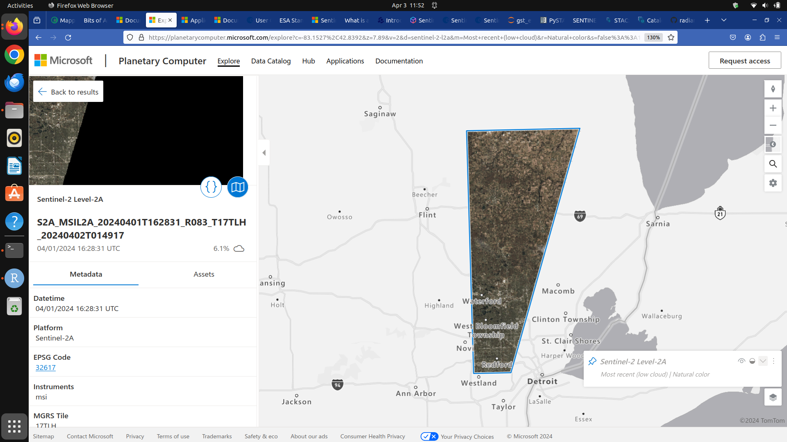

6 Access satellite imagery using Python
A number of satellites take snapshots of the Earth’s surface from space. The images recorded by these remote sensors represent a very precious data source for any activity that involves monitoring changes on Earth. Satellite imagery is typically provided in the form of geospatial raster data, with the measurements in each grid cell (“pixel”) being linked with accurate geographic coordinate information.
In this episode we will explore how to access open satellite data using Python. In particular, we will consider the Sentinel-2 data collection that is hosted on the Microsoft Planetary Computer. This dataset consists of multi-band optical images acquired by the two satellites of the Sentinel-2 mission and it is continuously updated with new images. After reading about the Sentinel-2 mission, you might have a number of questions:
- How do we do basic things like find images (geoTIFF) files and save the image itself to disk?
- What are these STAC repositories?
- What exactly is in this imaging data? There are numerous bands with different types of data and at different resolution levels (size in meters of each cell width).
- How do we read this imaging data into data structures amenable to further analysis?
- What kinds of analysis can we do with this data?
- What existing resources are available for newbies to Sentinel image data analysis?
In this section we learn to do the following:
- Search public STAC repositories of satellite imagery using Python.
- Inspect search result’s metadata.
- Download (a subset of) the assets available for a satellite scene.
- Open satellite imagery as raster data and save it to disk.
6.1 Overview of the Planetary Computer
Microsoft’s, pretty new, Planetary Computer is quite an ambitious project. It has several major components:
- Data Catalog - It is a ginormous repository of well cataloged data all about Earth’s various systems and includes a web based interface that allows users to find relevant data - for free. The repository is based on an open standard known as STAC.
- API - It has an API that leverages open source tools to make it easy to do data searches by time and location. Focuses on Python.
- Hub - A managed compute environment for doing cloud based geospatial analysis at scale. For this part you need to apply for access.
- Applications - An ecosystem of people doing meaningful work with the Planetary Computer.
There is a Mapscaping podcast featuring two of the main developers of the Planetary Computer - see https://mapscaping.com/podcast/the-planetary-computer/. The Mapscaping.com site is a great place to learn about geospatial analysis through its terrific podcasts. For example:
- The Planetary Computer - https://mapscaping.com/podcast/the-planetary-computer/
- Introducing Google Earth Engine - https://mapscaping.com/podcast/introducing-google-earth-engine/
- Sentinel Hub - https://mapscaping.com/podcast/sentinel-hub/
We’ll mostly be using the Planetary Computer to search for and acquire satellite image data from the Sentinel-2 and Landsat catalogs. We can use the PySTAC package to do this freely and without any authentication. As mentioned above, authentication is required to use the Hub computing cluster.
6.2 Search for satellite imagery
6.2.1 The SpatioTemporal Asset Catalog (STAC) specification
Current sensor resolutions and satellite revisit periods are such that terabytes of data products are added daily to the corresponding collections. Such datasets cannot be made accessible to users via full-catalog download. Space agencies and other data providers often offer access to their data catalogs through interactive portals such as the Copernicus Open Access Hub portal for the Sentinel missions. Accessing data via a GUI is a nice way to explore a catalog and get familiar with its content, but it represents a heavy and error-prone task that should be avoided if carried out systematically to retrieve data.
A service that offers programmatic access to the data enables users to access the desired data in a more reliable, scalable and reproducible manner. An important element in the software interface exposed to the users, which is generally called the Application Programming Interface (API), is the use of standards. Standards, in fact, can significantly facilitate the reusability of tools and scripts across datasets and applications.
The SpatioTemporal Asset Catalog (STAC) specification is an emerging standard for describing geospatial data. By organizing metadata in a form that adheres to the STAC specifications, data providers make it possible for users to access data from different missions, instruments and collections using the same set of tools.
6.3 Search a STAC catalog
There are general STAC browsers such as the one at Radiant Earth. It is good starting point to discover available datasets, as it provides an up-to-date list of existing STAC catalogs. However, we are going to use the STAC browsing tools available through the Planetary Computer.
6.4 Exercise: Discover a STAC catalog
Let’s take a moment to explore the Planetary Computer STAC catalog, which contains a large number of datasets spanning numerous areas such as air quality, climate, biodiversity, imagery, fires, weather, land use and more. Start by going to the main Data Catalog page. Spend some time browsing the various categories to see the breadth of data that is available. Then go to the Sentinel-2 Level-2A page. Click the big blue button on the right labelled View in Explorer. You can navigate around somewhat like you do with Google Earth or Maps. Find the OU campus. As you scroll around on the map, the list of image tiles will continually update along the left side of the screen. Notice that the default is the most recent images with low cloud cover at the top.
Pick one of the images from the list on the left. If you click, the Show on Map icon in the lower right corner of the image preview, you’ll see the satellite image superimposed on the map. If you click the squiggly bracket icon just to the left of the Show on Map icon, you’ll get a window with a Python code snippet for accessing the assets of this map. We’ll learn more about this shortly.

Scroll down through the image properties on the left. What CRS is this image using?
The EPSG code is 32627. This is associated with the CRS WGS 84 / UTM zone 17N. See https://epsg.io/?q=32617.
6.5 Cloud Optimized GeoTIFFs
Cloud Optimized GeoTIFFs (COGs) are regular GeoTIFF files with some additional features that make them ideal to be employed in the context of cloud computing and other web-based services. This format builds on the widely-employed GeoTIFF format, already introduced in Episode 1: Introduction to Raster Data. In essence, COGs are regular GeoTIFF files with a special internal structure. One of the features of COGs is that data is organized in “blocks” that can be accessed remotely via independent HTTP requests. Data users can thus access the only blocks of a GeoTIFF that are relevant for their analysis, without having to download the full file. In addition, COGs typically include multiple lower-resolution versions of the original image, called “overviews”, which can also be accessed independently. By providing this “pyramidal” structure, users that are not interested in the details provided by a high-resolution raster can directly access the lower-resolution versions of the same image, significantly saving on the downloading time. More information on the COG format can be found here.
6.5.1 Activities
Launch Jupyter lab and open the ou_land_use_05_satellite.ipynb file. Work your way through it.